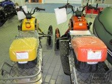
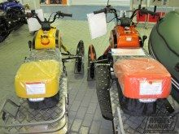

Описание
Представляем Вашему вниманию новинку на российском рынке - снегоход T150 Dingo!
Снегоход IRBIS DINGO T150 - новая модель, третье поколение компактного и удобного разборного снегохода, оборудованного более мощным 4-тактным двигателем с вариатором, реверс-редуктором и принципиально новой системой подвески с двумя амортизаторами!
От предыдущих моделей 110 и 125 снегоход Ирбис Динго 150 отличается увеличенной мощностью мотора,
увеличенным запасом хода (за счёт увеличения объёма топливного бака), прогрессивными усовершенствованиями в системе питания,
в ходовой части и гусенице.
Снегоход Dingo T150 более комфортен (теперь оснащен двухдиапазонным подогревом ручек и курка) и функционален
(имеет большой подсёдельный багажный отсек и усиленный фаркоп).
Примечание: Товар преобретенный в нашем магазине обмену и возврату не подлежит.
Технические характеристики
- Подогрев сиденья:
- Подогрев рукояток руля: имеется
- Тип топливной системы:
- Высота зацепа гусеницы (см): 2.3
- Длина гусеницы (см): 262
- Ширина гусеницы (см): 38
- Класс: утилитарный
- Тип трансмиссии: Вариатор
- Тип стартера: электрический
- Объём топливного бака (л): 7
- Тип охлаждения двигателя: Воздушный
- Число цилиндров двигателя: 1
- Тактность двигателя: 4
- Объём двигателя (куб.см): 149.6
- Мощность двигателя (л.с.): 9.25
- Масса (кг): 153